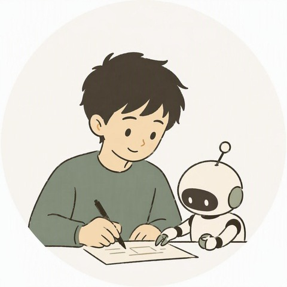

自己紹介
自己紹介とポートフォリオ
エンジニアとして得た知識と、実際に書いた記事をもとに、対応できることをまとめた自己紹介ページ。
記事を読む »CODE × WORDS / PORTFOLIO
技術をわかりやすくほどき、体験を自分の言葉で届ける。Webアプリ開発の知見を生かした執筆と、仕事・育児のリアルな気づきをエッセイとして発信しています。
自己紹介

Shohei
Webアプリ開発エンジニア / Webライター・福岡県在住
はじめまして、Shoheiです。普段はAWSを基盤とした環境で、Javaを中心としたWebアプリケーション開発を手がけるエンジニアとして、フルリモートで働いています。未就学児2人の育児と両立しながら、副業でWebライターに挑戦しています。
技術をわかりやすい言葉にほどくことと、日々の気づきを自分の言葉で届けることを大切にしています。AIは便利な道具。何を書くか、どう伝えるかを決めるのは自分自身、という姿勢で書いています。
以前は美容業界にいたこともあり、ネイル検定3級も保有しています。うまくいかなかったことも含めて、実際に体験したことをそのまま記事にすることを心がけています。
対応可能業務
Web記事の執筆
専門用語だらけの記事や、AIっぽい文章は書きません。現役エンジニアの専門知識と、実体験に基づいた読者に寄り添う内容を、自分の目を通して仕上げます。
業務効率化ツールの開発・AI導入支援
AIは導入して終わりでは意味がありません。本業でAIレビューの仕組み化やナレッジ蓄積の設計を担当してきた経験を活かし、業務効率化ツールの開発から、現場で実際に使われる仕組みづくりのご相談まで対応します。
LP・個人サイトの制作
ノーコードやAI任せの制作は、表示速度やアクセシビリティに不安が残ります。Webアプリ開発エンジニアとして、コードからレスポンシブ・WCAG準拠・パフォーマンスまで一貫して設計します（このポートフォリオサイトも同じ工程で制作しました）。
オンライン事務代行
資料作成・データ整理・請求書作成など、時間のかかる事務作業を巻き取ります。本業時間外での対応のため、電話対応やメールの一次対応など即時対応が必要な業務は対象外です。本業でも情報管理を徹底する環境にいるため、秘密保持には特に注意して対応します。
主な使用ツール
制作・執筆実績
できることの裏付けとして、実際に書いた記事を掲載しています。
自己紹介とポートフォリオ
エンジニアとして得た知識と、実際に書いた記事をもとに、対応できることをまとめた自己紹介ページ。
記事を読む »本業を持ちながら副業ライティングに20件近く挑戦してみた【前編】
クラウドワークス・ランサーズで20件近くの案件に応募。期限内に完了できたのは1件だけだった記録。
記事を読む »本業を持ちながら副業ライティングに20件近く挑戦してみた【後編】
20件近く応募して見えたのは、受注できたかどうかより「本業のありがたみ」と「自分の限界」だったという気づき。
記事を読む »育児で時間を奪われ、オーディオブックで「学ぶ理由」を見つけた話
育児で「奪われた」はずの時間が、オーディオブックをきっかけに学び方を見直すきっかけになった話。
記事を読む »今週、ちゃんと頑張りすぎていた
「今週、なんだかいつもより疲れているな」——仕事と育児を両立する日々の中で、頑張りすぎに気づいた記録。
記事を読む »このポートフォリオサイト
Gemini Notebookでのリサーチ、Claude Codeでの実装、Codexによる独立レビュー、ローカルLLMでの下処理、Microsoft 365 Copilotでのイラスト制作など、役割ごとに複数のAIツールを使い分けて制作。レスポンシブ対応、WCAG準拠のアクセシビリティ、パフォーマンス最適化まで一貫して設計しています。
ページ上部に戻る »希望単価・稼働条件
| 業務内容 | 単価目安 |
|---|---|
| Web記事の執筆 | 1文字1円〜(ジャンル・納期により応相談) |
| 業務効率化ツールの開発・AI導入支援 | 20時間で5万円〜(規模により応相談) |
| オンライン事務代行 | 時給1,000円〜(業務内容により応相談) |
| LP・個人サイトの制作 | 1ページ3万円〜(デザイン・実装込み、規模により応相談) |
稼働時間目安
週10時間未満
本業と家庭を最優先にしています
月間対応本数
応相談
手持ちタスク次第のため個別にご相談ください
納期目安
応相談
手持ちタスク次第のため個別にご相談ください
返信について
本業時間中は翌営業日以降
になる場合があります
ご連絡方法
note・XのDM
または下記フォームから
お問い合わせ
記事執筆や業務効率化・AI導入のご相談など、お気軽にご連絡ください。副業時間の都合上、ご返信までお時間をいただく場合があります。